Proof of concept camera calibration
I consider to have a robot that of which i can control the end effector pose, 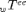, and a camera that can measure a marker attached to the robot, returing 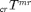, its pose w.r.t. the camera frame. Camera and marker pose are not completely known.
Contents
Frames that compose the kinematic loop
loop to marker passing by the robot
- : Robot position (known, measured/controlled),
- 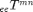: Nominal pose of the marker w.r.t. ee (known,fixed),
 : correction between nominal and real marker pose (unknown).
: correction between nominal and real marker pose (unknown).
Loop to marker passing by the camera
- 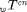: nominal position of the camera (known,fixed),
- 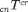: correction between nominal and real camera pose (unknown),
- : measurement of the camera, (known, measured)
In the picture is represented the kinematic loop, with named frames, and unknowns marked with a quastion mark!
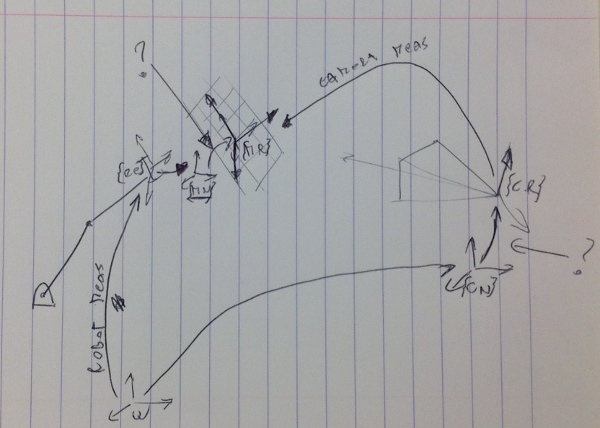
Generate Measurements
here we will set all the parameters, and generate the robot posess, as well as the measurements of the camera, affected by 'noise_ang'
% control parameters n_robot_pos=6; n_iteration=20; noise_ang=0; % angular measurement are not used, this noise is not influential noise_pos=0.01; generate_new=true; % prescaling for a weight in the output space in order to compare rotation % error and linear error, a weight matrix can be introduced. % Set approx as the distance btw the camera and its target r_eq=2;% meters! % set nominal positions ee_Ti_mn=[rpy2r([0,0,0]),[0,0,0.1]';[0 0 0 1]]; ee_T_mn=ee_Ti_mn; w_Ti_cn=[rpy2r([0,0,pi]),[0,2,0.5]';[0 0 0 1]]; w_T_cn=w_Ti_cn; % set unknown errors in poses of camera and markers,(that will be setimated) if(generate_new) mn_Tr_mr=random_pose(90*pi/180,0.4); cn_Tr_cr=random_pose(90*pi/180,0.4); % generate some robot positions for i=1:n_robot_pos w_T_ee(:,:,i)=random_pose(pi\4,1); end end % laslty, generate measurements with optional noise for i=1:n_robot_pos w_T_mr=w_T_ee(:,:,i)*ee_T_mn*mn_Tr_mr; w_T_cr=w_T_cn*cn_Tr_cr; cr_T_mr(:,:,i)=camera_measurement(w_T_mr,w_T_cr,noise_ang, noise_pos); end
plots of frames (you can comment this if gives problem)
figure (1) title('positions of markers and camera') trplot(eye(4),'frame','world','arrow','color','k','length',0.4); hold on; trplot(w_T_cn,'frame','cn','length',0.4,'arrow'); trplot(w_T_cn*cn_Tr_cr,'frame','cr','color','k','length',0.4,'arrow'); for i=1:n_robot_pos trplot(w_T_ee(:,:,i)*ee_T_mn,... 'frame',['mn',num2str(i)],'arrow','length',0.4); trplot(w_T_ee(:,:,i)*ee_T_mn*mn_Tr_mr,... 'frame',['mr',num2str(i)],'color','r','arrow','length',0.4); end grid on view([-129,12]) hold off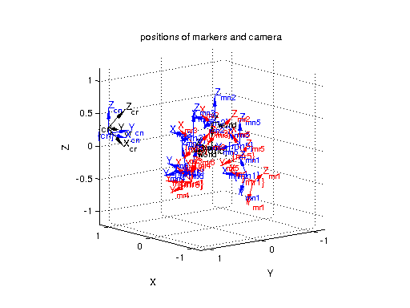
Estimation procedure:
I compute the position (only!) of the marker using the two brances of the kinematic loop:
- 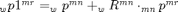 and so 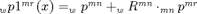
- 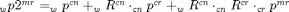
We have 9 unknowns:
- 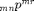 ->pmx pmy pmz
- 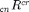 ->acx acy acz
- 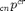 ->pcx pcy pcz
by not including orientation in the loop closure, we discard orientation measuremnts (very noisy!) from the camera, and orientation error estimation of the marker w.r.t. the robot ee, that is not interesting because the marker is probably removed after this camera calibration procedure.
syms pmx pmy pmz acx acy acz pcx pcy pcz real mn_p_mr=[pmx pmy pmz]'; % note the infinitesimal rotation hypotesis!! cn_R_cr=[ 1, -acz, acy; acz, 1, -acx; -acy, acx, 1]; cn_p_cr=[pcx pcy pcz]'; % known quantities also declared as symbolic w_p_mn = sym('w_p_mn_%d_%d', [3 1]); w_R_mn = sym('w_R_mn_%d_%d', [3 3]); w_p_cn = sym('w_p_cn_%d_%d', [3 1]); w_R_cn = sym('w_R_cn_%d_%d', [3 3]); cr_p_mr = sym('cr_p_mr_%d_%d', [3 1]); %first branch p1=w_p_mn+w_R_mn*mn_p_mr; %second branch p2=w_p_cn+w_R_cn*cn_p_cr+w_R_cn*cn_R_cr*cr_p_mr; %loop closoure equation l=p2-p1; %regroup coefficents [C1 T1]=coeffs(l(1), [pmx pmy pmz acx acy acz pcx pcy pcz ]); [C2 T2]=coeffs(l(2), [pmx pmy pmz acx acy acz pcx pcy pcz ]); [C3 T3]=coeffs(l(3), [pmx pmy pmz acx acy acz pcx pcy pcz ]); %build the matrix following the order given in T A=[C1(1:9);C2(1:9);C3(1:9)] %and the know terms (the minus because i bring on the other side!) B=-[C1(10);C2(10);C3(10)] % now, we have to find the vector T so that AT=B
A = [ -w_R_mn_1_1, -w_R_mn_1_2, -w_R_mn_1_3, cr_p_mr_2_1*w_R_cn_1_3 - cr_p_mr_3_1*w_R_cn_1_2, cr_p_mr_3_1*w_R_cn_1_1 - cr_p_mr_1_1*w_R_cn_1_3, cr_p_mr_1_1*w_R_cn_1_2 - cr_p_mr_2_1*w_R_cn_1_1, w_R_cn_1_1, w_R_cn_1_2, w_R_cn_1_3] [ -w_R_mn_2_1, -w_R_mn_2_2, -w_R_mn_2_3, cr_p_mr_2_1*w_R_cn_2_3 - cr_p_mr_3_1*w_R_cn_2_2, cr_p_mr_3_1*w_R_cn_2_1 - cr_p_mr_1_1*w_R_cn_2_3, cr_p_mr_1_1*w_R_cn_2_2 - cr_p_mr_2_1*w_R_cn_2_1, w_R_cn_2_1, w_R_cn_2_2, w_R_cn_2_3] [ -w_R_mn_3_1, -w_R_mn_3_2, -w_R_mn_3_3, cr_p_mr_2_1*w_R_cn_3_3 - cr_p_mr_3_1*w_R_cn_3_2, cr_p_mr_3_1*w_R_cn_3_1 - cr_p_mr_1_1*w_R_cn_3_3, cr_p_mr_1_1*w_R_cn_3_2 - cr_p_mr_2_1*w_R_cn_3_1, w_R_cn_3_1, w_R_cn_3_2, w_R_cn_3_3] B = w_p_mn_1_1 - w_p_cn_1_1 - cr_p_mr_1_1*w_R_cn_1_1 - cr_p_mr_2_1*w_R_cn_1_2 - cr_p_mr_3_1*w_R_cn_1_3 w_p_mn_2_1 - w_p_cn_2_1 - cr_p_mr_1_1*w_R_cn_2_1 - cr_p_mr_2_1*w_R_cn_2_2 - cr_p_mr_3_1*w_R_cn_2_3 w_p_mn_3_1 - w_p_cn_3_1 - cr_p_mr_1_1*w_R_cn_3_1 - cr_p_mr_2_1*w_R_cn_3_2 - cr_p_mr_3_1*w_R_cn_3_3
Iterative estimation
We iterate with the same input data, but updating the nominal values we try to bring the unknown paramter toward zero. this is useful because the matrix cn_R_cr is build infinitesimal rotations hypotesis.
iter=0; maxres=[]; error=[]; correction=[]; %Compute intial error % the nominal values where ee_Ti_mn and w_Ti_cn; Dm=inv(ee_T_mn)*ee_Ti_mn*mn_Tr_mr; Dc=inv(w_T_cn)*w_Ti_cn*cn_Tr_cr; error=[error,[Dm(1:3,4);tr2rpy(Dc(1:3,1:3))';Dc(1:3,4)]]; while(iter<n_iteration) % Building up the big matrix to invert Atot=[]; Btot=[]; %at first substitute constant values in the symbolic expression A1=subs(A,w_p_cn,w_T_cn(1:3,4)); A2=subs(A1,w_R_cn,w_T_cn(1:3,1:3)); B1=subs(B,w_p_cn,w_T_cn(1:3,4)); B2=subs(B1,w_R_cn,w_T_cn(1:3,1:3)); for i=1:n_robot_pos % marker nominal pose w_T_mn=w_T_ee(:,:,i)*ee_T_mn; A3=subs(A2, w_p_mn , w_T_mn(1:3,4)); A4=subs(A3, w_R_mn , w_T_mn(1:3,1:3)); B3=subs(B2, w_p_mn , w_T_mn(1:3,4)); B4=subs(B3, w_R_mn , w_T_mn(1:3,1:3)); %camera measurements A5=subs(A4, cr_p_mr , cr_T_mr(1:3,4,i)); B5=subs(B4, cr_p_mr , cr_T_mr(1:3,4,i)); %insert in global matrices Atot=[Atot;double(A5)]; Btot=[Btot;double(B5)]; end % pseudoinverse, weighted in the output soace to normalise angles and distances Wy=diag([ones(1,3),r_eq*ones(1,3),ones(1,3)]); x=pinv(Atot*Wy)*Btot; % x is [pmx pmy pmz acx acy acz pcx pcy pcz ] residue=Atot*x-Btot; maxres=[maxres,max(abs(residue))]; correction=[correction,x]; % I correct the nominal values ee_T_mn=ee_T_mn*[eye(3),x(1:3);[0 0 0 1]]; w_T_cn=w_T_cn*[rpy2r(x(4:6)'),x(7:9);[0 0 0 1]]; % the nominal values where ee_Ti_mn and w_Ti_cn; Dm=inv(ee_T_mn)*ee_Ti_mn*mn_Tr_mr; Dc=inv(w_T_cn)*w_Ti_cn*cn_Tr_cr; error=[error,[Dm(1:3,4);tr2rpy(Dc(1:3,1:3))';Dc(1:3,4)]]; iter=iter+1; end
the x vector must go toward zero in all components
figure (2) bar3(error); title('Error btw estimated and ground truth') view (30,30); xlabel('#trial') set(gca,'YTickLabel', {'pmx' 'pmy' 'pmz' 'acx' 'acy' 'acz' 'pcx' 'pcy' 'pcz'}) ch = get(gca,'child'); set(ch,'facea',.3); figure (3) bar3(correction); title('Correction term applied after n-iteration') view (30,30); xlabel('#trial') set(gca,'YTickLabel', {'pmx' 'pmy' 'pmz' 'acx' 'acy' 'acz' 'pcx' 'pcy' 'pcz'}) ch = get(gca,'child'); set(ch,'facea',.3); figure (4) set(gcf,'Position',[1,1,60*n_iteration+1,301]); bar(maxres), grid on; title('Max residue at each iteration') ylabel ('x,y,z max error over all the measurements) [m]') xlabel('#trial') %add value above the bar text([1:length(maxres)]',maxres',num2str(maxres','%0.4f'),... 'HorizontalAlignment','center',... 'VerticalAlignment','bottom') xaxis([0,n_iteration+1])
 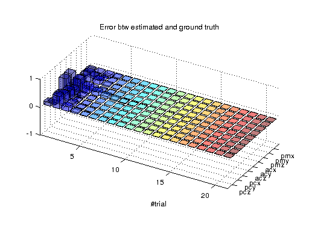 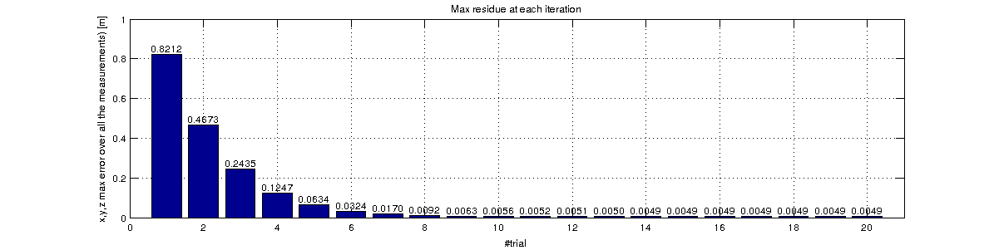
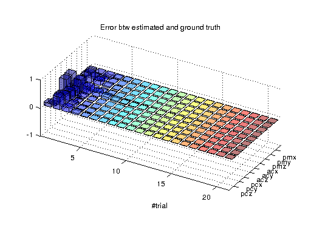 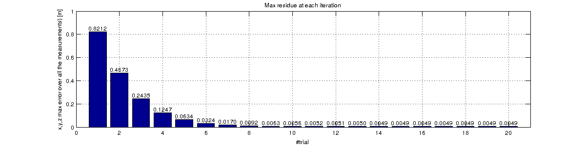